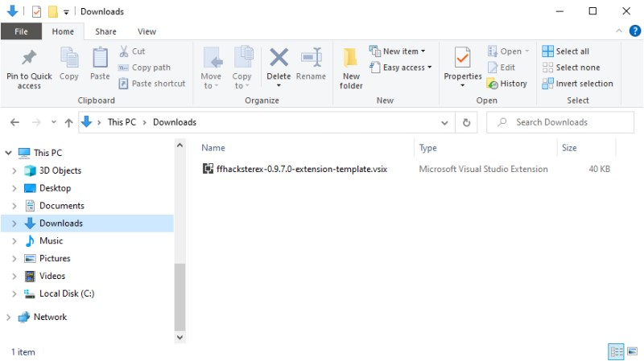
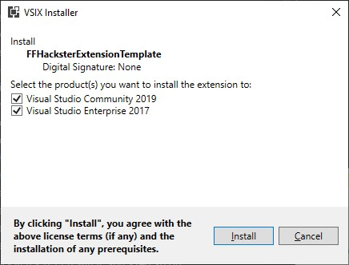
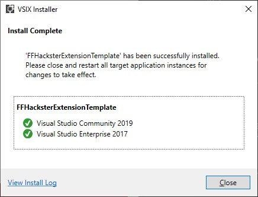
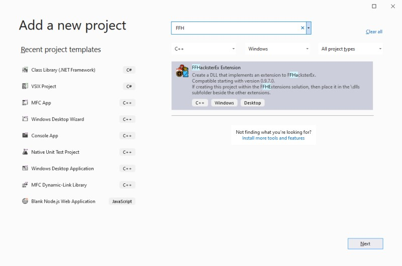
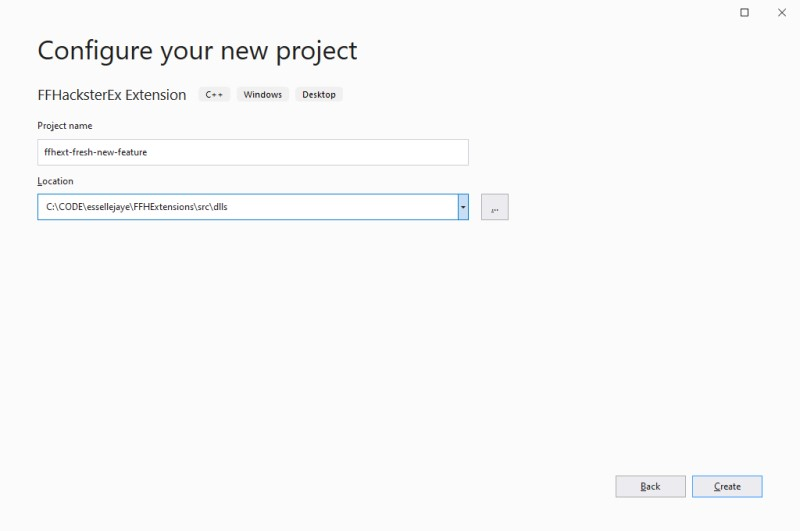
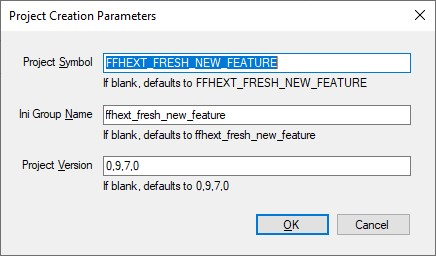
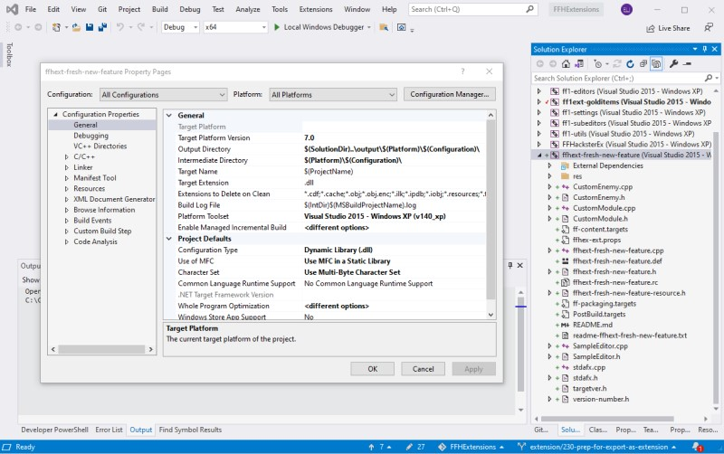
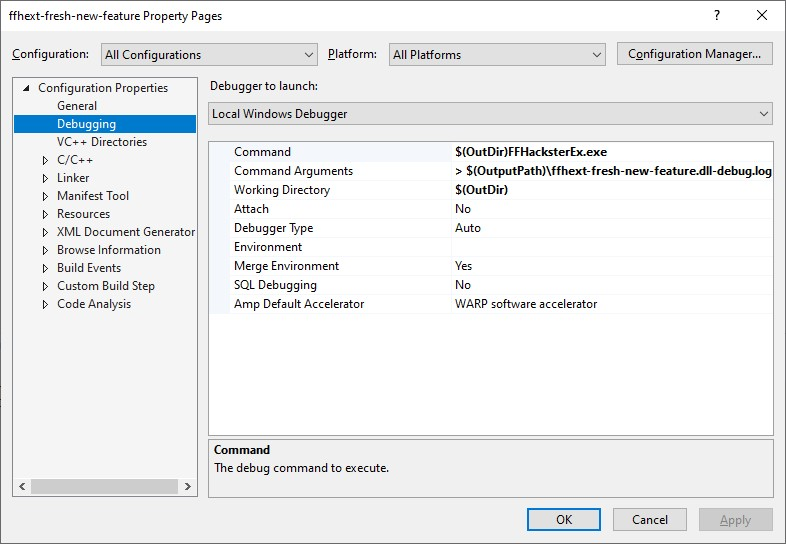
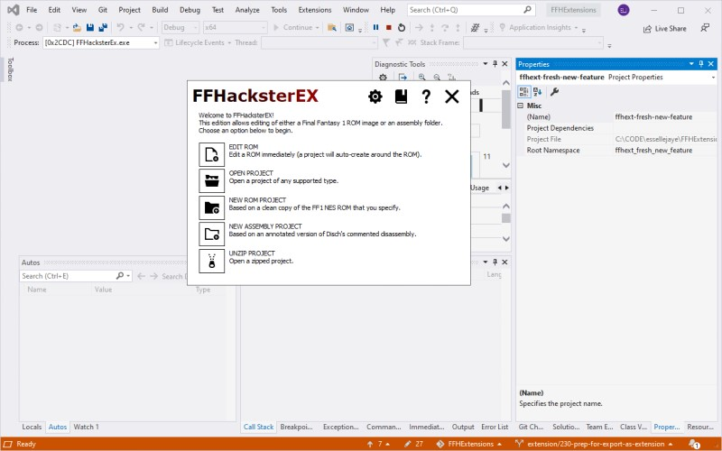

Extension Creation
Extension Creation
To create an extension, create a DLL that conforms to the interfaces
described above. While the DLL technically doesn't have to be MFC-enabled,
using an MFC-enabled DLL to override existing editors and use existing
libraries is very helpful.
If it's not an MFC DLL, then you'd have to write all the boilerplate and
helper routines in the extension DLL.
The FFHacksterEx GitHub includes a project named FFHExtensions that
provides a template to help create extension DLLs in Visual Studio.
You can get it in one of three ways:
Installing the Project Template
If installing the project template with the VSIX file, close Visual Studio and
then run the VSIX file.

NOTE: While it technically suports Visual Studio 2017, it was built and tested
against 2019.


Creating extension projects
With the FFHExtensions project open in Visual Studio, add a new project.
This bring up the New Project dialog; filter on "FFH" and the FFHacksterEx Extension
template should appear. Click Next.

Rename the extension to your liking.
Note the Location folder in this case is likely set to the \src folder, e.g.
C:\CODE\essellejaye\FFHExtensions\src
Change this so that the project will be created in the \src\dlls folder, e.g.
C:\CODE\essellejaye\FFHExtensions\src\dlls

The Project Creation Parameters dialog appears next.

| Field | Detail |
|---|---|
| Project Symbol | This is the symbol used in DLL import and export statements. |
| Ini Group Name | The name to use for properties in the values file tied to this extension. |
| Project Version | The version number to use in the new project. If left blank, then it defaults to the version of the template itself. |
Clicking OK creates the project and expands it in the Solution Explorer.

Debugging the extension
The extension is designed to match this solution's debug settings, so you should
be able to debug by setting the extension as the active project, then starting a
debugging session.


For information about using extensions DLLs, see Extensions.